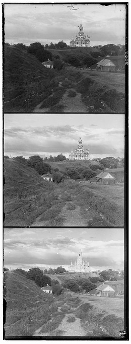
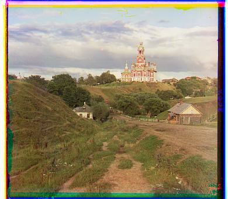
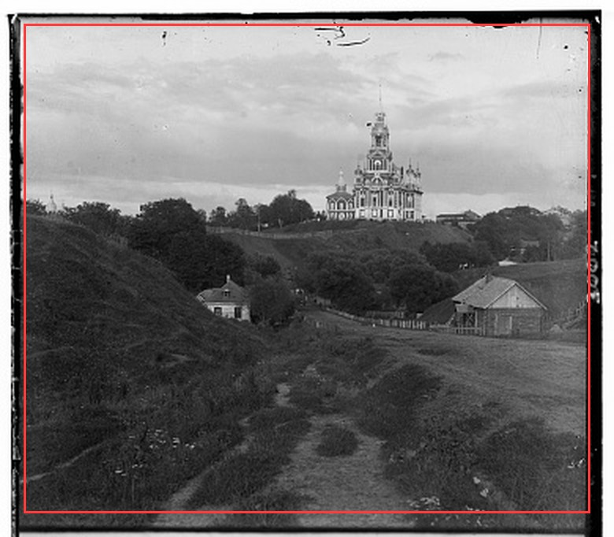
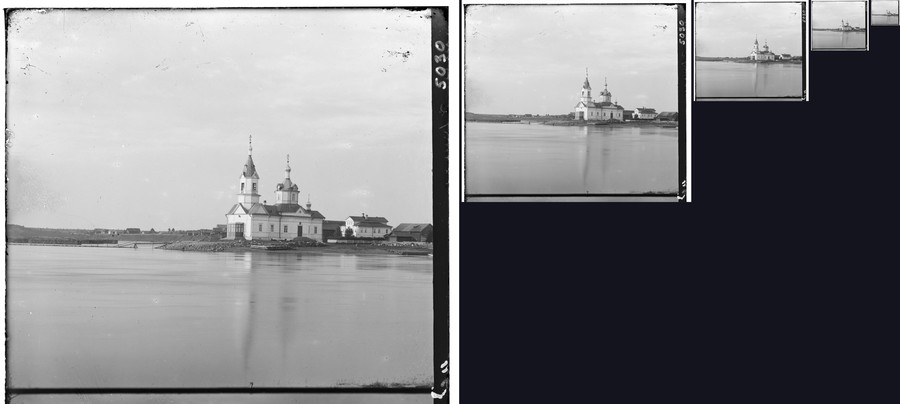
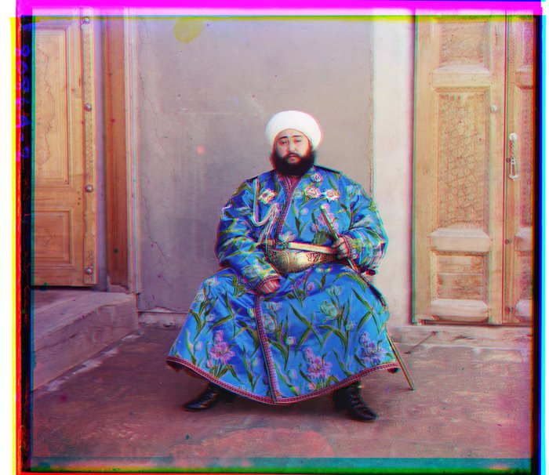
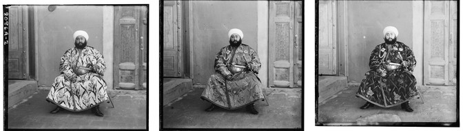
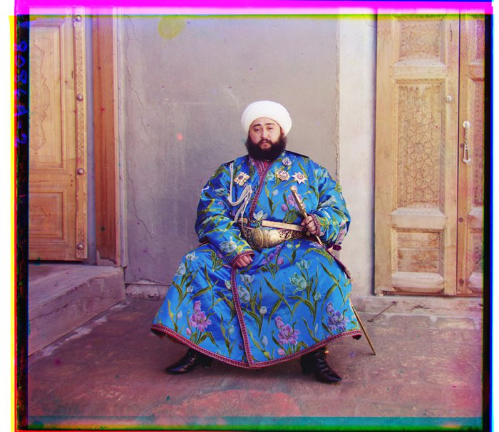

Between 1909 and 1915, Sergei Prokudin-Gorskii photographed Russia by shooting each scene three times, fast, once through a red filter, once green, once blue, all onto a single glass plate. Color film did not exist yet. A projector was supposed to combine the three back into one color image, but that mostly never happened, and the negatives ended up scanned by the Library of Congress decades later, still stacked in their original, unmerged form: blue on top, green in the middle, red on the bottom. The three exposures were never taken at exactly the same instant, so the scene lands in a slightly different spot in each third. No two plates need the same correction, so my code has to find the shift automatically, per image, with no manual tuning.

a raw plate: blue on top, green in the middle, red on the bottom, not yet aligned

the same plate after finding the right shift for each channel and stacking them
To recover the color photo, I split each plate into thirds and search for the (x, y) shift that brings the green and red thirds into register with the blue one, which I treat as the fixed reference. For a candidate shift, I first crop a border off both crops before comparing them. The scanned plates have dark borders and a frame that has nothing to do with the actual scene, and without trimming them the search aligns those borders instead of the picture.

the red line marks the interior region actually scored. Everything outside it, the black frame, scratches, and handwriting, is ignored.
On what's left, I score the shift with sum of squared differences (SSD): the pixelwise difference between the two crops, squared so positive and negative errors don't cancel, then summed. A smaller total means a closer match, and this is equivalent to the L2 norm for picking the best shift. I also implemented normalized cross-correlation (NCC), which instead subtracts each crop's own mean and rescales it to unit length before taking the dot product between them, so a shift scores near 1 when the two crops vary together and near 0 or negative when they don't, but the results below all use SSD. I take whichever candidate shift scores best and keep it.
On the low-resolution jpgs, I test every integer shift from −15 to +15 in both x and y, 961 candidates, score each one, and keep the winner.
The single-scale search takes much longer on the full-resolution scans. The tifs are roughly ten times larger per side than the jpgs, and displacement scales with image size, so an offset that was 5 pixels on the small version becomes 50 on the full-size one, well outside a ±15 search. Widening the window directly isn't an option either, since the cost of an exhaustive search grows with the square of its radius, and doing that on a multi-megapixel image would take far longer than the under-a-minute budget for this project. So instead I build an image pyramid: downsample both channels by half repeatedly, with anti-aliasing on so the small image still looks like the big one, until the image is only a few hundred pixels across. At that tiny scale, whatever the true offset was has also shrunk by the same factor at each halving, so it's now small enough for the same ±15 search to find directly. Climbing back up, each time the image doubles in size, I double my current estimate to match, then run a small ±2 search around it to correct for the rounding that downsampling introduces. The expensive wide search only ever runs once, on the smallest image in the pyramid. Every level above that is a cheap local correction.

the blue channel of church.tif at each pyramid level: 3202, 1601, 801, 401, then 201 pixels tall. The expensive search only runs on the smallest one.
Results of the single-scale, exhaustive ±15 pixel search on the three low-resolution jpgs provided:
Results of the pyramid search on all 11 full-resolution glass plate scans provided, using the exact same
procedure and parameters on every image, nothing tuned per plate. Each file is roughly 70MB, and every
alignment below still finishes in a few seconds. One of the 11, emir.tif, comes out visibly
misaligned under this metric. See the Bells & Whistles section below for why, and for the fix.

emir.tif: G (24, 49), R (57, 103)
The result shows visible color fringing around the turban and along the cracks in the wall behind him. The cause becomes obvious in the image below: the blue and red exposures of this particular photo differ substantially in brightness in places, with the robe reading bright in blue and noticeably darker in red. Both SSD and NCC compare raw pixel brightness, so they pull the search toward a shift that matches these brightness patterns rather than the true geometric alignment. The fix is in the Bells & Whistles section below.

emir's B, G, R channels (left to right). The robe reads bright in blue, dark in red.
The same procedure, pyramid search with raw-pixel SSD, applied to three more plates I picked from the Library of Congress's Prokudin-Gorskii collection. All three align correctly with this metric.
Across the full set of 17 images (14 provided plus these 3), emir.tif is the only one that
fails under plain pixel-based alignment.
Every (x, y) shift from the sections above, gathered in one table for easier reference:
| image | G (x, y) | R (x, y) |
|---|---|---|
| cathedral | (2, 5) | (3, 12) |
| monastery | (2, -3) | (2, 3) |
| tobolsk | (2, 3) | (3, 6) |
| church | (4, 25) | (-4, 58) |
| emir | (24, 49) | (57, 103) |
| harvesters | (16, 59) | (13, 124) |
| icon | (17, 41) | (23, 90) |
| ilemselga | (7, 39) | (11, 130) |
| melons | (11, 82) | (13, 178) |
| religious painting | (3, 28) | (7, 68) |
| self portrait | (29, 79) | (36, 176) |
| siren | (-6, 49) | (-25, 96) |
| three generations | (14, 53) | (11, 112) |
| wharf | (-7, 15) | (-16, 83) |
| metal ornament | (2, 5) | (4, 11) |
| seed/bean specimens | (-4, 4) | (-9, 11) |
| iconostasis | (0, 4) | (0, 11) |
The required baseline metric, SSD on raw pixel values, is what Sections 2 and 3 use above, and it holds
up on 16 of the 17 plates. On emir.tif, though, raw pixel brightness isn't a reliable signal, for
the reason shown above. The fix: score each channel's Sobel gradient magnitude instead of its raw pixel
values, still with the same metric, on a different feature. I pass each channel through a 3×3 Sobel
filter, which produces an edge map, then feed that into the exact same coarse-to-fine pyramid search I use
everywhere else. Edges are largely invariant to the brightness differences between channels, since
the outline of the turban or a crack in the wall sits in the same place regardless of how bright or dark that
spot happens to read in a given exposure.
before (raw pixels): G (24, 49), R (57, 103)

after (Sobel edges): G (24, 49), R (40, 107)
The red-channel offset moves from (57, 103) → (40, 107), the corrected alignment, and the fringing around the turban and wall is gone. I implemented the Sobel kernels, the pyramid, and the search procedure all from scratch, consistent with the rest of the project. The only library call involved is a general-purpose convolution function, and I use it purely as the underlying 3×3 convolution primitive, not for any alignment-specific logic.
To confirm this doesn't regress anything that was already working, I ran the same edge-based search on all
11 provided .tif files. The table below shows the red-channel offset under both metrics, and the
largest per-axis difference between them:
| image | R, raw pixels | R, Sobel edges | max difference |
|---|---|---|---|
| church | (-4, 58) | (-4, 58) | 0 px |
| emir | (57, 103) | (40, 107) | 17 px (fixed) |
| harvesters | (13, 124) | (14, 124) | 1 px |
| icon | (23, 90) | (23, 90) | 0 px |
| ilemselga | (11, 130) | (11, 131) | 1 px |
| melons | (13, 178) | (13, 177) | 1 px |
| religious painting | (7, 68) | (6, 70) | 2 px |
| self portrait | (36, 176) | (37, 176) | 1 px |
| siren | (-25, 96) | (-24, 96) | 1 px |
| three generations | (11, 112) | (9, 111) | 2 px |
| wharf | (-16, 83) | (-16, 82) | 1 px |
Aside from emir.tif, every offset shifts by at most 2 pixels, well within the two metrics
simply agreeing on the same correct alignment. The edge-based metric fixes the one plate that was failing
without disturbing the 13 that already worked. With the baseline metric, 1 of 17 images fails. With gradient
features, 0 of 17 do.
With the required baseline, pyramid search with SSD on raw pixel values, emir.tif is the one
plate that comes out misaligned, for the brightness-mismatch reason covered in Part 2. Once the Part 4 fix is
applied to every image, that one corrects itself and nothing else moves by more than 2 pixels. So across the
full set of 17 images, I end up with no failure cases at all.